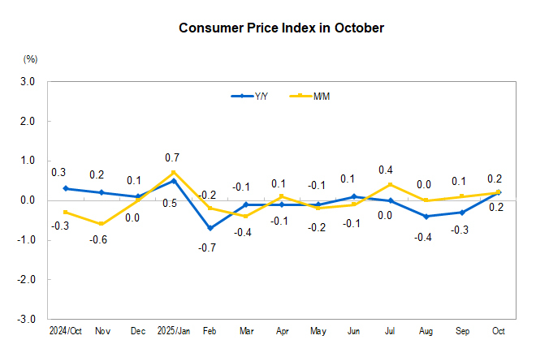
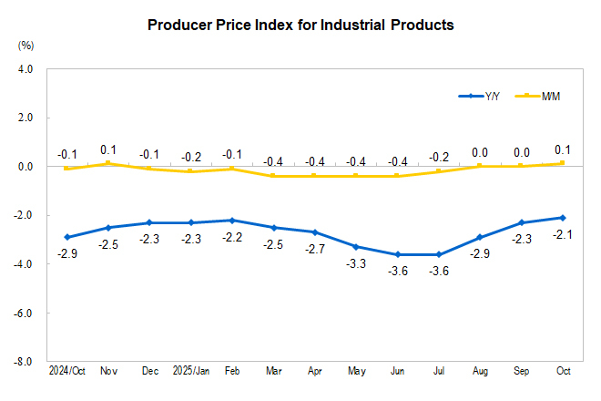
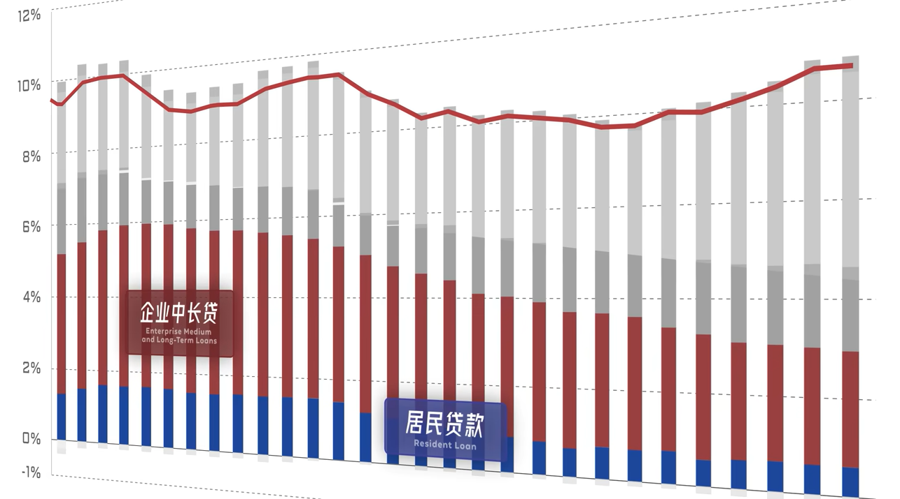
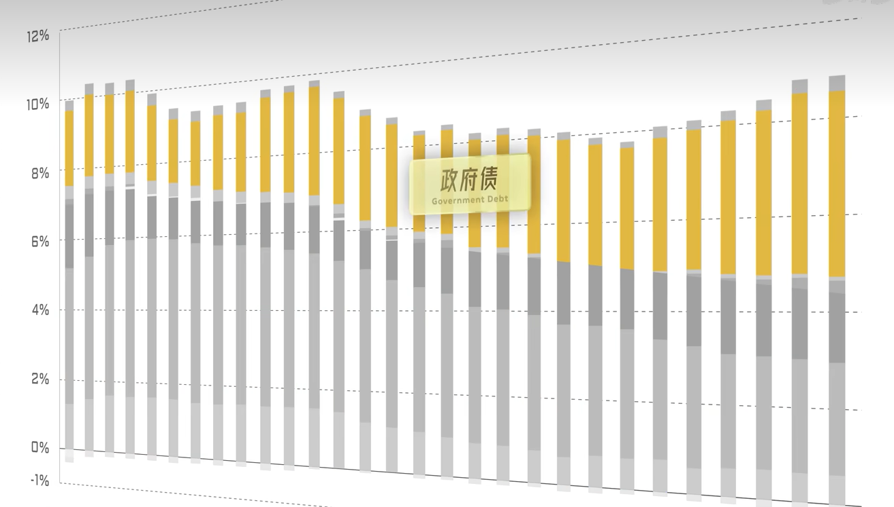

【思考分享】中国经济2025小结
一、内需
主题1：拉动内需 多花钱，企业多赚钱，才能给员工更高的工资，消费能力越高，花更多的钱，形成正向循环
主要表现： 1.国补 花了1500亿元的特别国债+3000亿元超长期特别国债 效果怎么样呢，这个主要看一个指标，叫社零（社会消费品零售总额），最近都保持在3%以上的增长，侧重国补家电、3C
打住：你看现在数据上，社零增长不错，整体消费在增长，但是，他靠着补贴拉动，就存在一个结构性问题，你像家电、3C，譬如：空调、电视、洗衣机，普通家庭一用就是十几年，现在买了，以后就不买了，我们把这种叫做“Pre-Consumption”，即前置消费，就是预支了未来的消费，这恐怕不是长久之计。
所以，今年5月的政治局会议，就说要增加一个服务型消费增长点（餐饮 旅游 按摩 家政）
总的问题：这个补贴，人们是因为他便宜，所以才买他，就会导致价格上不去，你看今年的CPI（通胀），一直在0%附近，而这个PPI（工业生产者出厂价格），长期处于负值区间，意味着企业利润受挤压 那企业利润有影响，居民必然也会有影响，有一定通缩的风险


价格：价格为什么上不去呢，近几年，有些产业迅速扩张，譬如：光伏、新能源汽车，产能过剩，根据亚当斯密的供给需求模型，供需不匹配，那企业内卷，只能打价格战 引出第二个主题
主题2：反内卷 去年中央经济工作会议：“综合整治‘内卷式’竞争，规范地方政府和企业行为” 譬如：外卖大战，被中央叫停，约谈两次了 目的：并不是要求价格快速回升，而是保护企业的利益，从长远来看，使得价格合理回升
二、外需
主题：出口 舆论压力大，但效果依旧能打，稳占中国经济20%
原因：中国企业抢出口，美国企业抢进口 转口贸易成为一个巨大的缓冲垫 5000亿元证券基金保险公司互换便利和3000亿元股票回购增持再贷款 思考：你说今年国家外需也刺激，内需也刺激，为啥体感不太OK呢？ 主要原因：市场的信心 一般，我们看市场信息，有个指标叫Social Finance Data（社融），全社会融了多少钱，

看这张图，其实虽然社融同比增速止住颓势，甚至有所增长，但居民和企业还是在递减

主要增加的，是黄色部分政府债务拉动的 以上两图取自https://space.bilibili.com/520819684，大神【小Lin说】 感谢！ 还有就是，这些政策很多针对于高新技术产业，对长远发展有帮助，但对于普通人体感不强
三、总的来说
宏观数据达标，但微观体感偏冷；旧动能（房地产）正在出清，新动能（新质生产力）虽强但尚未完全补位。【当然，这句话我肯定说不出来，不过以上分析均是个人思考以及其他互联网大神的观点所形成的，本人学识浅薄，但话糙理不糙，有误请指正】